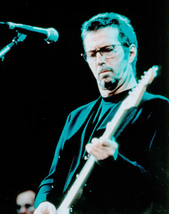

Eric Clapton
Biografia
Eric Patrick Clapton nasceu no dia 30/04/1945 na Inglaterra. Ganhou sua primeira guitarra aos 13 anos e se interessou pelo Blues americano de artistas como Robert Johnson e Muddy Watters.
Foi convidado pelo guitarrista Tom McGuiness para formar sua primeira banda, o “The Roosters”. O grupo fez algumas apresentações em 1963, tocando ao redor de Richmond, e após isso, os dois se juntam ao “The Engineers”, que também não foi muito longe.O reconhecimento de Clapton só começou quando entrou no “Yardbirds”, banda inglesa de grande influência que teve o mérito de reunir três dos maiores guitarristas de todos os tempos em sua formação: Eric Clapton, Jeff Beck e Jimmy Page. Em 1966, forma o “Cream” com o baixista Jack Bruce e o baterista Ginger Baker.
Com a gravação de 3 álbuns (“Fresh Cream”, “Disraeli Gears”, e “Wheels Of Fire”) e muitos shows em terras norte americanas, o Cream atingiu enorme sucesso e Eric Clapton já era tido como um dos melhores guitarristas da história. A banda se separa no fim de 1968 com mais brigas e discussões entre os integrantes.Forma o “Blind Faith” com Steve Winwood, Ginger Baker e Rick Grech, que durou só um disco e não foi muito bem sucedido. Clapton e George Harrison gravam os solos de “While My guitar Gently Sleeps”, do álbum branco dos Beatles, e iniciam um triângulo amoroso com a mulher de Harrison.Em 1974, Clapton volta com o reggae “I Shot The Sheriff”, tornando-se o responsável pelo lançamento de Bob Marley nas paradas de todo o mundo. Inicia assim uma boa fase musical que rendeu também o clássico “Cocaine”, em 1978. Durante a década de 80 a aceitação por parte do público foi crescente. Em 1990 Clapton ganhou seu primeiro Grammy com a música “Bad Love”.No ano de 1991, o filho Conor, de 4 anos, nascido de um relacionamento extra-conjugal, caiu do apartamento onde morava com a mãe e faleceu. Esse triste episódio foi registrado na canção “Tears In Heaven” que o guitarrista dedicou ao filho. A música, além de expressar toda a tristeza de Clapton, tornou-se o maior sucesso de toda a sua carreira e teria seu lançamento no álbum “Unplugged”.
Discografia >><< Blues |
|